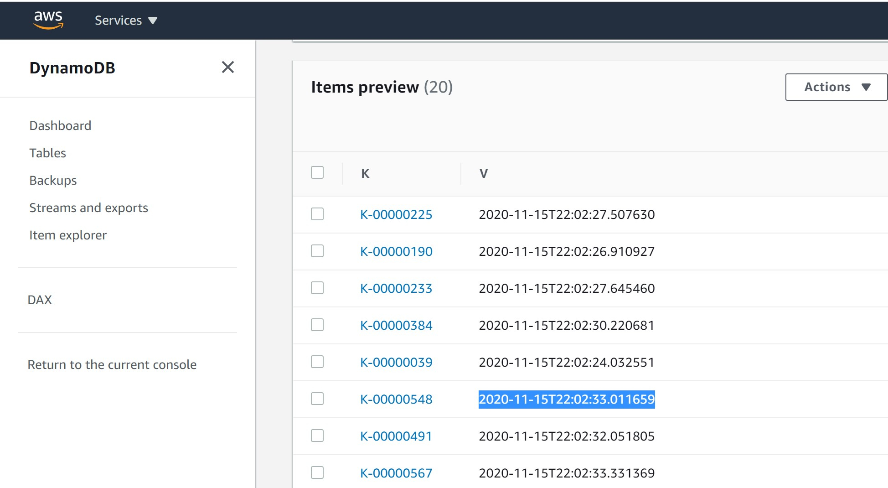
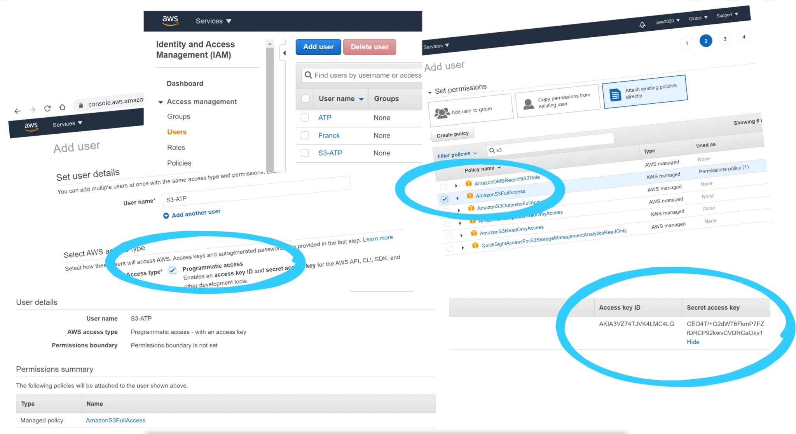
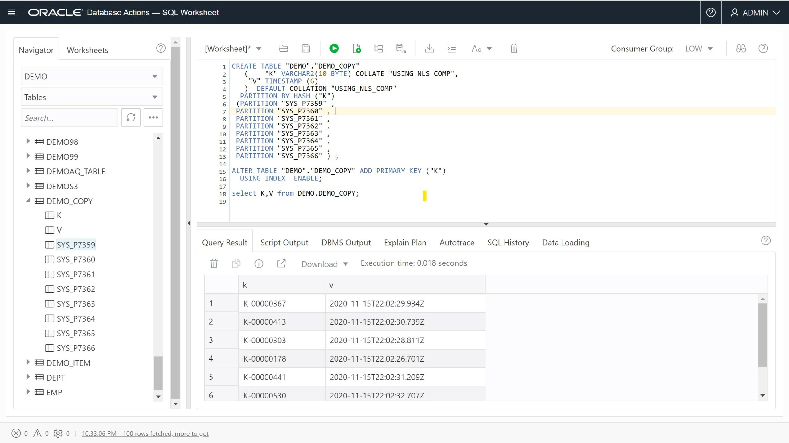

This was first published on https://www.dbi-services.com/blog/aws-dynamodb-s3-oci-autonomous-database/ (2020-11-16)
Republishing here for new followers. The content is related to the versions available at the publication date.
.
I contribute to multiple technologies communities. I’m an Oracle ACE Director for many years, and I also became an AWS Data Hero recently 🎉. I got asked if there’s no conflict with that, as Amazon and Oracle are two competitors. Actually, there’s no conflict at all. Those advocacy programs are not about sales, but technology. Many database developers and administrators have to interact with more than one cloud provider, and those cloud providers expand their interoperability for better user experience. Here is an example with two recent news from past months:
Imagine that your application stores some data into DynamoDB because it is one of the easiest serverless datastore that can scale to millions of key-value queries per second with great availability and performance. You may want to export it to the S3 Object Storage and this new DynamoDB feature can export it without any code (no lambda, no pipeline, no ETL…). When in S3 you may want to query it. Of course, there are many possibilities. One is Amazon Athena with the Presto query engine. But that’s for another post. Here I’m using my free Oracle Autonomous Database to query directly from Amazon S3 with the full SQL power of Oracle Database.
This is a new feature, my current AWS CLI doesn’t know about it:
[opc@a demo]$ aws --version
aws-cli/2.0.50 Python/3.7.3 Linux/4.14.35-2025.400.9.el7uek.x86_64 exe/x86_64.oracle.7
[opc@a demo]$ aws dynamodb export-table-to-point-in-time
Invalid choice: 'export-table-to-point-in-time', maybe you meant:
Let’s update it to the latest version:
cd /var/tmp
wget -c https://awscli.amazonaws.com/awscli-exe-linux-x86_64.zip
unzip awscli-exe-linux-x86_64.zip
sudo ./aws/install --bin-dir /usr/local/bin --install-dir /usr/local/aws-cli --update
aws --version
cd -
If you don’t already have the AWS CLI, the initial install is the same as the upgrade procedure. You will just have to “aws configure” it.
[opc@a demo]$ aws dynamodb export-table-to-point-in-time help | awk '/DESCRIPTION/,/^$/'
DESCRIPTION
Exports table data to an S3 bucket. The table must have point in time
recovery enabled, and you can export data from any time within the
point in time recovery window.
This is the inline help. Online one is: https://docs.aws.amazon.com/de_de/cli/latest/reference/dynamodb/export-table-to-point-in-time.html
I’m quickly creating a DynamoDB table. I’m doing that in the AWS free tier and set the Throughput (RCU/WCU) to the maximum I can do for free here as I have no other tables:
[opc@a demo]$ aws dynamodb create-table --attribute-definitions AttributeName=K,AttributeType=S --key-schema AttributeName=K,KeyType=HASH --billing-mode PROVISIONED --provisioned-throughput ReadCapacityUnits=25,WriteCapacityUnits=25 --table-name Demo
TABLEDESCRIPTION 2020-11-15T23:02:08.543000+01:00 0 arn:aws:dynamodb:eu-central-1:802756008554:table/Demo b634ffcb-1ae3-4de0-8e42-5d8262b04a38 Demo 0 CREATING
ATTRIBUTEDEFINITIONS K S
KEYSCHEMA K HASH
PROVISIONEDTHROUGHPUT 0 25 25
This creates a DynamoDB table with a hash partition key named “K”.
When you export a whole table, you want a consistent view of it. If you just scan it, you may see data as-of different points in time because there are concurrent updates and DynamoDB is No SQL: No ACID (Durability is there but Atomicity is limited, Consistency has another meaning, and there’s no snapshot Isolation), no locks (except with a lot of DiY code), no MVCC (Multi-Version Concurrency control). However, Amazon DynamoDB provides MVCC-like consistent snapshots for recovery reasons, when enabling Continuous Backups which is like Copy-on-Write on the storage. This can provide a consistent point-in-time snapshot of the whole table. And the “Export to S3” feature is based on that. This means that if you don’t enable Point-In-Time Recovery you can’t use this feature:
[opc@a demo]$ aws dynamodb export-table-to-point-in-time --table-arn arn:aws:dynamodb:eu-central-1:802756008554:table/Demo --s3-bucket franck-pachot-free-tier --export-format DYNAMODB_JSON
An error occurred (PointInTimeRecoveryUnavailableException) when calling the ExportTableToPointInTime operation: Point in time recovery is not enabled for table 'Demo'
Here is how to enable it (which can also be done from the console in table “Backups” tab):
[opc@a demo]$ aws dynamodb update-continuous-backups --table-name Demo --point-in-time-recovery-specification PointInTimeRecoveryEnabled=true
CONTINUOUSBACKUPSDESCRIPTION ENABLED
POINTINTIMERECOVERYDESCRIPTION 2020-11-15T23:02:15+01:00 2020-11-15T23:02:15+01:00 ENABLED
I quickly insert a few items just to test this feature:
python3
import boto3, botocore.config, datetime
print(datetime.datetime.utcnow().isoformat())
dynamodb = boto3.resource('dynamodb',config=botocore.config.Config(retries={'mode':'adaptive','total_max_attempts': 10}))
for k in range(1,1000):
dynamodb.Table('Demo').put_item(Item={'K':f"K-{k:08}",'V':datetime.datetime.utcnow().isoformat()})
quit()
This has created 1000 items with a key from K-00000001 to K-00001000 and a simple value item with one attribute “V” where I put the current timestamp.

They have been inserted sequentially. I’ve highlighted one item inserted in the middle, with its timestamp. The reason is to test the consistent snapshot: only the items inserted before this one should be visible from this point-in-time.
I mention this “Export Time” for the export to S3:
[opc@a demo]$ aws dynamodb export-table-to-point-in-time --export-time 2020-11-15T22:02:33.011659 --table-arn arn:aws:dynamodb:eu-central-1:802756008554:table/Demo --s3-bucket franck-pachot-free-tier --export-format DYNAMODB_JSON
EXPORTDESCRIPTION e8839402-f7b0-4732-b2cb-63e74f8a4c7b arn:aws:dynamodb:eu-central-1:802756008554:table/Demo/export/01605477788673-a117c9b4 DYNAMODB_JSON IN_PROGRESS 2020-11-15T23:02:33+01:00 franck-pachot-free-tier AES256 2020-11-15T23:03:08.673000+01:00
arn:aws:dynamodb:eu-central-1:802756008554:table/Demo b634ffcb-1ae3-4de0-8e42-5d8262b04a38
You can do the same from the console (use the preview of the new DynamoDB console).
And that’s all, I have a new AWSDynamoDB folder in the S3 bucket I’ve mentioned:
[opc@a demo]$ aws s3 ls franck-pachot-free-tier/AWSDynamoDB/
PRE 01605477788673-a117c9b4/
The subfolder 01605477788673-a117c9b4 is created for this export. A new export will create another one.
[opc@a demo]$ aws s3 ls franck-pachot-free-tier/AWSDynamoDB/01605477788673-a117c9b4/
PRE data/
2020-11-15 23:04:09 0 _started
2020-11-15 23:06:09 197 manifest-files.json
2020-11-15 23:06:10 24 manifest-files.md5
2020-11-15 23:06:10 601 manifest-summary.json
2020-11-15 23:06:10 24 manifest-summary.md5
There’s a lot of metadata coming with this, and a “data” folder.
[opc@a demo]$ aws s3 ls franck-pachot-free-tier/AWSDynamoDB/01605477788673-a117c9b4/data/
2020-11-15 23:05:35 4817 vovfdgilxiy6xkmzy3isnpzqgu.json.gz
This is where my DynamoDB table items have been exported: a text file, with one record per item, each as a JSON object, and gzipped:
{"Item":{"K":{"S":"K-00000412"},"V":{"S":"2020-11-15T22:02:30.725004"}}}
{"Item":{"K":{"S":"K-00000257"},"V":{"S":"2020-11-15T22:02:28.046544"}}}
{"Item":{"K":{"S":"K-00000179"},"V":{"S":"2020-11-15T22:02:26.715717"}}}
{"Item":{"K":{"S":"K-00000274"},"V":{"S":"2020-11-15T22:02:28.333683"}}}
{"Item":{"K":{"S":"K-00000364"},"V":{"S":"2020-11-15T22:02:29.889403"}}}
{"Item":{"K":{"S":"K-00000169"},"V":{"S":"2020-11-15T22:02:26.546318"}}}
{"Item":{"K":{"S":"K-00000121"},"V":{"S":"2020-11-15T22:02:25.628021"}}}
{"Item":{"K":{"S":"K-00000018"},"V":{"S":"2020-11-15T22:02:23.613737"}}}
{"Item":{"K":{"S":"K-00000459"},"V":{"S":"2020-11-15T22:02:31.513156"}}}
{"Item":{"K":{"S":"K-00000367"},"V":{"S":"2020-11-15T22:02:29.934015"}}}
{"Item":{"K":{"S":"K-00000413"},"V":{"S":"2020-11-15T22:02:30.739685"}}}
{"Item":{"K":{"S":"K-00000118"},"V":{"S":"2020-11-15T22:02:25.580729"}}}
{"Item":{"K":{"S":"K-00000303"},"V":{"S":"2020-11-15T22:02:28.811959"}}}
{"Item":{"K":{"S":"K-00000021"},"V":{"S":"2020-11-15T22:02:23.676213"}}}
{"Item":{"K":{"S":"K-00000167"},"V":{"S":"2020-11-15T22:02:26.510452"}}}
...
As you can see, the items are in the DynamoDB API format, mentioning attribute name (I’ve defined “K” and “V”) and the datatype (“S” for string here).
As my goal is to access it through the internet, I’ve defined a user for that:

As my goal is access it from my Oracle Autonomous Database, I connect to it:
[opc@a demo]$ TNS_ADMIN=/home/opc/wallet ~/sqlcl/bin/sql demo@atp1_tp
SQLcl: Release 20.3 Production on Sun Nov 15 22:34:32 2020
Copyright (c) 1982, 2020, Oracle. All rights reserved.
Password? (**********?) ************
Last Successful login time: Sun Nov 15 2020 22:34:39 +01:00
Connected to:
Oracle Database 19c Enterprise Edition Release 19.0.0.0.0 - Production
Version 19.5.0.0.0
DEMO@atp1_tp>
I use SQLcl command line here, with the downloaded wallet, but you can do the same from SQL Developer Web of course.
Here is how I declare those credentials from the Oracle database:
DEMO@atp1_tp> exec dbms_cloud.create_credential('AmazonS3FullAccess','REDACTED_AWS_ACCESS_KEY_ID','RTcJaqRZ+8BTwdatQeUe4AHpJziR5xVrRGl7pmgd');
PL/SQL procedure successfully completed.
Currently, this DBMS_CLOUD is available only on the Oracle Cloud-managed databases, but I’m quite sure that this will come into on-premises version soon. Data movement through an Object Storage is a common thing today.
Ok, now many things are possible now, with this DBMS_CLOUD package API, like creating a view on it (also known as External Table) to query directly from this remote file:
DEMO@atp1_tp>
begin
dbms_cloud.create_external_table(
table_name=>'DEMO',
credential_name=>'AmazonS3FullAccess',
file_uri_list=>'https://franck-pachot-free-tier.s3.eu-central-1.amazonaws.com/AWSDynamoDB/01605477788673-a117c9b4/data/vovfdgilxiy6xkmzy3isnpzqgu.json.gz',
format=>json_object( 'compression' value 'gzip' ),column_list=>'ITEM VARCHAR2(32767)'
);
end;
/
PL/SQL procedure successfully completed.
This is straightforward: the credential name, the file URL, and the format (compressed JSON). As we are in a RDBMS here I define the structure: the name of the External Table (we query it as a table, but nothing is stored locally) and its definition (here only one ITEM column for the JSON string). Please, remember that SQL has evolved from its initial definition. I can do schema-on-read here by just defining an unstructured character string as my VARCHAR2(32767). But I still benefit from RDBMS logical independence: query as a table something that can be in a different format, on a different region, with the same SQL language.
Here is what I can view from this External Table:
DEMO@atp1_tp> select * from DEMO order by 1;
ITEM
___________________________________________________________________________
{"Item":{"K":{"S":"K-00000001"},"V":{"S":"2020-11-15T22:02:23.202348"}}}
{"Item":{"K":{"S":"K-00000002"},"V":{"S":"2020-11-15T22:02:23.273001"}}}
{"Item":{"K":{"S":"K-00000003"},"V":{"S":"2020-11-15T22:02:23.292682"}}}
{"Item":{"K":{"S":"K-00000004"},"V":{"S":"2020-11-15T22:02:23.312492"}}}
{"Item":{"K":{"S":"K-00000005"},"V":{"S":"2020-11-15T22:02:23.332054"}}}
...
{"Item":{"K":{"S":"K-00000543"},"V":{"S":"2020-11-15T22:02:32.920001"}}}
{"Item":{"K":{"S":"K-00000544"},"V":{"S":"2020-11-15T22:02:32.940199"}}}
{"Item":{"K":{"S":"K-00000545"},"V":{"S":"2020-11-15T22:02:32.961124"}}}
{"Item":{"K":{"S":"K-00000546"},"V":{"S":"2020-11-15T22:02:32.976036"}}}
{"Item":{"K":{"S":"K-00000547"},"V":{"S":"2020-11-15T22:02:32.992915"}}}
547 rows selected.
DEMO@atp1_tp>
I validate the precision of the DynamoDB Point-In-Time snapshot: I exported as of 2020-11-15T22:02:33.011659 which was the point in time where I inserted K-00000548. At that time only K-00000001 to K-00000547 were there.
On SQL you can easily transform a non-structured JSON collection of items into a structured two-dimensional table:
DEMO@atp1_tp>
select json_value(ITEM,'$."Item"."K"."S"'),
json_value(ITEM,'$."Item"."V"."S"')
from DEMO
order by 1 fetch first 10 rows only;
JSON_VALUE(ITEM,'$."ITEM"."K"."S"') JSON_VALUE(ITEM,'$."ITEM"."V"."S"')
______________________________________ ______________________________________
K-00000001 2020-11-15T22:02:23.202348
K-00000002 2020-11-15T22:02:23.273001
K-00000003 2020-11-15T22:02:23.292682
K-00000004 2020-11-15T22:02:23.312492
K-00000005 2020-11-15T22:02:23.332054
K-00000006 2020-11-15T22:02:23.352470
K-00000007 2020-11-15T22:02:23.378414
K-00000008 2020-11-15T22:02:23.395848
K-00000009 2020-11-15T22:02:23.427374
K-00000010 2020-11-15T22:02:23.447688
10 rows selected.
I used JSON_VALUE to extract attribute string values through JSON Path, but it will be easier to query with a relational view and proper data types, thanks to the JSON_TABLE function:
DEMO@atp1_tp>
select K,V, V-lag(V) over (order by V) "lag"
from DEMO,
json_table( ITEM, 'I’ve declared the timestamp as TIMESTAMP and then further arithmetic can be done, like I did here calculating the time interval between two items.
And yes, that’s a shout-out for the power of SQL for analyzing data, as well as a shout-out for millisecond data-ingest I did on a NoSQL free tier 😋 Be careful, I sometimes put hidden messages link this in my demos…
I can use the query above to store it locally with a simple CREATE TABLE … AS SELECT:
DEMO@atp1_tp>
create table DEMO_COPY(K primary key using index local, V)
partition by hash(K) partitions 8
as select K,V from DEMO, json_table(ITEM,'In order to mimic the DynamoDB scalability, I’ve created it as a hashed partitioned table with local primary key index. Note that there’s a big difference here: the number of partition is mentioned and necessitates an ALTER TABLE to increase it. This is probably something that will evolve in the Oracle Autonomous database but for the moment, DynamoDB still provides the most simple API for automatic sharding.
Here is the execution plan:
DEMO@atp1_tp> select * from DEMO_COPY where K='K-00000042';
K V
_____________ __________________________________
K-00000042 15-NOV-20 10.02.24.109384000 PM
DEMO@atp1_tp> xc
DEMO@atp1_tp> select plan_table_output from dbms_xplan.display_cursor(format=>'allstats last')
PLAN_TABLE_OUTPUT
_________________________________________________________________________________________________________________________
SQL_ID cn4b2uar7hxm5, child number 0
-------------------------------------
select * from DEMO_COPY where K='K-00000042'
Plan hash value: 3000930534
----------------------------------------------------------------------------------------------------------------------
| Id | Operation | Name | Starts | E-Rows | A-Rows | A-Time | Buffers | Reads |
----------------------------------------------------------------------------------------------------------------------
| 0 | SELECT STATEMENT | | 1 | | 1 |00:00:00.01 | 3 | 1 |
| 1 | TABLE ACCESS BY GLOBAL INDEX ROWID| DEMO_COPY | 1 | 1 | 1 |00:00:00.01 | 3 | 1 |
|* 2 | INDEX UNIQUE SCAN | SYS_C0037357 | 1 | 1 | 1 |00:00:00.01 | 2 | 1 |
----------------------------------------------------------------------------------------------------------------------
Predicate Information (identified by operation id):
---------------------------------------------------
2 - access("K"='K-00000042')
19 rows selected.
3 buffer reads are, of course, really fast. And by increasing the number of partitions (always a power of two because a linear hashing algorithm is used). But do not stick to the same data model as the source NoSQL one. If you export data to a relational database, you probably have other access paths.
While in execution plans here is the one from the External Table:
DEMO@atp1_tp>
select K,V from DEMO,
json_table(ITEM,'Even if the plan is ready for parallel access, here I have one file to read and unzip and it was not parallelized (Starts=1). There are no statistics and that’s why the rows estimations (E-Rows) is wrong. What is important to understand is that the whole file is read and unzipped (A-Rows=547) before the non-interesting rows being filtered out. However, we can see that the condition on the relational columns has been pushed down as a JSON Path predicate.
I did everything from the command line here, but you can use SQL Developer Web:

Note that rather than creating an External Table and creating a table from it, you can also insert the remote data into an existing table with DBMS_CLOUD:
DEMO@atp1_tp> create table DEMO_ITEM("Item" varchar2(32767));
Table DEMO_ITEM created.
DEMO@atp1_tp> exec dbms_cloud.copy_data(table_name=>'DEMO_ITEM',credential_name=>'AmazonS3FullAccess',file_uri_list=>'https://franck-pachot-free-tier.s3.eu-central-1.amazonaws.com/AWSDynamoDB/01605477788673-a117c9b4/data/vovfdgilxiy6xkmzy3isnpzqgu.json.gz',format=>json_object( 'compression' value 'gzip' ));
PL/SQL procedure successfully completed.
Elapsed: 00:00:01.130
I used all free tier here, but be careful that you may have multiple services billed when doing this.
First, I used two options of DynamoDB:
And when taking out data from S3 you should check at egress costs.
From The Oracle Autonomous Database, I used the always free database (20GB free for life) and ingress transfer is free as well.
Conclusion: better do the export once and copy data rather than query the External Table multiple times. This is not the correct solution if you want a frequently refreshed copy. But it is very satisfying to know that you can move data from one cloud provider to the other, and one technology to the other. I’ll probably blog about the other way soon.
columns ( K varchar2(10) path '$."Item"."K"."S"' error on error, V timestamp path '$."Item"."V"."S"' error on error )) order by K fetch first 10 rows only; K V lag _____________ __________________________________ ______________________ K-00000001 15-NOV-20 10.02.23.202348000 PM K-00000002 15-NOV-20 10.02.23.273001000 PM +00 00:00:00.070653 K-00000003 15-NOV-20 10.02.23.292682000 PM +00 00:00:00.019681 K-00000004 15-NOV-20 10.02.23.312492000 PM +00 00:00:00.019810 K-00000005 15-NOV-20 10.02.23.332054000 PM +00 00:00:00.019562 K-00000006 15-NOV-20 10.02.23.352470000 PM +00 00:00:00.020416 K-00000007 15-NOV-20 10.02.23.378414000 PM +00 00:00:00.025944 K-00000008 15-NOV-20 10.02.23.395848000 PM +00 00:00:00.017434 K-00000009 15-NOV-20 10.02.23.427374000 PM +00 00:00:00.031526 K-00000010 15-NOV-20 10.02.23.447688000 PM +00 00:00:00.020314 10 rows selected. I’ve declared the timestamp as TIMESTAMP and then further arithmetic can be done, like I did here calculating the time interval between two items.
And yes, that’s a shout-out for the power of SQL for analyzing data, as well as a shout-out for millisecond data-ingest I did on a NoSQL free tier 😋 Be careful, I sometimes put hidden messages link this in my demos…
I can use the query above to store it locally with a simple CREATE TABLE … AS SELECT:
In order to mimic the DynamoDB scalability, I’ve created it as a hashed partitioned table with local primary key index. Note that there’s a big difference here: the number of partition is mentioned and necessitates an ALTER TABLE to increase it. This is probably something that will evolve in the Oracle Autonomous database but for the moment, DynamoDB still provides the most simple API for automatic sharding.
Here is the execution plan:
3 buffer reads are, of course, really fast. And by increasing the number of partitions (always a power of two because a linear hashing algorithm is used). But do not stick to the same data model as the source NoSQL one. If you export data to a relational database, you probably have other access paths.
While in execution plans here is the one from the External Table:
Even if the plan is ready for parallel access, here I have one file to read and unzip and it was not parallelized (Starts=1). There are no statistics and that’s why the rows estimations (E-Rows) is wrong. What is important to understand is that the whole file is read and unzipped (A-Rows=547) before the non-interesting rows being filtered out. However, we can see that the condition on the relational columns has been pushed down as a JSON Path predicate.
I did everything from the command line here, but you can use SQL Developer Web:
Note that rather than creating an External Table and creating a table from it, you can also insert the remote data into an existing table with DBMS_CLOUD:
I used all free tier here, but be careful that you may have multiple services billed when doing this.
First, I used two options of DynamoDB:
And when taking out data from S3 you should check at egress costs.
From The Oracle Autonomous Database, I used the always free database (20GB free for life) and ingress transfer is free as well.
Conclusion: better do the export once and copy data rather than query the External Table multiple times. This is not the correct solution if you want a frequently refreshed copy. But it is very satisfying to know that you can move data from one cloud provider to the other, and one technology to the other. I’ll probably blog about the other way soon.
columns ( K varchar2(10) path '$."Item"."K"."S"' , V timestamp path '$."Item"."V"."S"' )); Table DEMO_COPY created. DEMO@atp1_tp> desc DEMO_COPY Name Null? Type _______ ___________ _______________ K NOT NULL VARCHAR2(10) V TIMESTAMP(6) In order to mimic the DynamoDB scalability, I’ve created it as a hashed partitioned table with local primary key index. Note that there’s a big difference here: the number of partition is mentioned and necessitates an ALTER TABLE to increase it. This is probably something that will evolve in the Oracle Autonomous database but for the moment, DynamoDB still provides the most simple API for automatic sharding.
Here is the execution plan:
3 buffer reads are, of course, really fast. And by increasing the number of partitions (always a power of two because a linear hashing algorithm is used). But do not stick to the same data model as the source NoSQL one. If you export data to a relational database, you probably have other access paths.
While in execution plans here is the one from the External Table:
Even if the plan is ready for parallel access, here I have one file to read and unzip and it was not parallelized (Starts=1). There are no statistics and that’s why the rows estimations (E-Rows) is wrong. What is important to understand is that the whole file is read and unzipped (A-Rows=547) before the non-interesting rows being filtered out. However, we can see that the condition on the relational columns has been pushed down as a JSON Path predicate.
I did everything from the command line here, but you can use SQL Developer Web:
Note that rather than creating an External Table and creating a table from it, you can also insert the remote data into an existing table with DBMS_CLOUD:
I used all free tier here, but be careful that you may have multiple services billed when doing this.
First, I used two options of DynamoDB:
And when taking out data from S3 you should check at egress costs.
From The Oracle Autonomous Database, I used the always free database (20GB free for life) and ingress transfer is free as well.
Conclusion: better do the export once and copy data rather than query the External Table multiple times. This is not the correct solution if you want a frequently refreshed copy. But it is very satisfying to know that you can move data from one cloud provider to the other, and one technology to the other. I’ll probably blog about the other way soon.
columns ( K varchar2(10) path '$."Item"."K"."S"' error on error, V timestamp path '$."Item"."V"."S"' error on error )) order by K fetch first 10 rows only; K V lag _____________ __________________________________ ______________________ K-00000001 15-NOV-20 10.02.23.202348000 PM K-00000002 15-NOV-20 10.02.23.273001000 PM +00 00:00:00.070653 K-00000003 15-NOV-20 10.02.23.292682000 PM +00 00:00:00.019681 K-00000004 15-NOV-20 10.02.23.312492000 PM +00 00:00:00.019810 K-00000005 15-NOV-20 10.02.23.332054000 PM +00 00:00:00.019562 K-00000006 15-NOV-20 10.02.23.352470000 PM +00 00:00:00.020416 K-00000007 15-NOV-20 10.02.23.378414000 PM +00 00:00:00.025944 K-00000008 15-NOV-20 10.02.23.395848000 PM +00 00:00:00.017434 K-00000009 15-NOV-20 10.02.23.427374000 PM +00 00:00:00.031526 K-00000010 15-NOV-20 10.02.23.447688000 PM +00 00:00:00.020314 10 rows selected. I’ve declared the timestamp as TIMESTAMP and then further arithmetic can be done, like I did here calculating the time interval between two items.
And yes, that’s a shout-out for the power of SQL for analyzing data, as well as a shout-out for millisecond data-ingest I did on a NoSQL free tier 😋 Be careful, I sometimes put hidden messages link this in my demos…
I can use the query above to store it locally with a simple CREATE TABLE … AS SELECT:
In order to mimic the DynamoDB scalability, I’ve created it as a hashed partitioned table with local primary key index. Note that there’s a big difference here: the number of partition is mentioned and necessitates an ALTER TABLE to increase it. This is probably something that will evolve in the Oracle Autonomous database but for the moment, DynamoDB still provides the most simple API for automatic sharding.
Here is the execution plan:
3 buffer reads are, of course, really fast. And by increasing the number of partitions (always a power of two because a linear hashing algorithm is used). But do not stick to the same data model as the source NoSQL one. If you export data to a relational database, you probably have other access paths.
While in execution plans here is the one from the External Table:
Even if the plan is ready for parallel access, here I have one file to read and unzip and it was not parallelized (Starts=1). There are no statistics and that’s why the rows estimations (E-Rows) is wrong. What is important to understand is that the whole file is read and unzipped (A-Rows=547) before the non-interesting rows being filtered out. However, we can see that the condition on the relational columns has been pushed down as a JSON Path predicate.
I did everything from the command line here, but you can use SQL Developer Web:
Note that rather than creating an External Table and creating a table from it, you can also insert the remote data into an existing table with DBMS_CLOUD:
I used all free tier here, but be careful that you may have multiple services billed when doing this.
First, I used two options of DynamoDB:
And when taking out data from S3 you should check at egress costs.
From The Oracle Autonomous Database, I used the always free database (20GB free for life) and ingress transfer is free as well.
Conclusion: better do the export once and copy data rather than query the External Table multiple times. This is not the correct solution if you want a frequently refreshed copy. But it is very satisfying to know that you can move data from one cloud provider to the other, and one technology to the other. I’ll probably blog about the other way soon.
columns ( K varchar2(10) path ‘$.”Item”.”K”.”S”‘ , V timestamp path ‘$.”Item”.”V”.”S”‘ )) where K=’K-00000042′; K V _____________ __________________________________ K-00000042 15-NOV-20 10.02.24.109384000 PM DEMO@atp1_tp> select plan_table_output from dbms_xplan.display_cursor(format=>’allstats last’) PLAN_TABLE_OUTPUT ________________________________________________________________________________________________________ SQL_ID 1vfus4x9mpwp5, child number 0 ————————————- select K,V from DEMO, json_table(ITEM,’
Even if the plan is ready for parallel access, here I have one file to read and unzip and it was not parallelized (Starts=1). There are no statistics and that’s why the rows estimations (E-Rows) is wrong. What is important to understand is that the whole file is read and unzipped (A-Rows=547) before the non-interesting rows being filtered out. However, we can see that the condition on the relational columns has been pushed down as a JSON Path predicate.
I did everything from the command line here, but you can use SQL Developer Web:
Note that rather than creating an External Table and creating a table from it, you can also insert the remote data into an existing table with DBMS_CLOUD:
I used all free tier here, but be careful that you may have multiple services billed when doing this.
First, I used two options of DynamoDB:
And when taking out data from S3 you should check at egress costs.
From The Oracle Autonomous Database, I used the always free database (20GB free for life) and ingress transfer is free as well.
Conclusion: better do the export once and copy data rather than query the External Table multiple times. This is not the correct solution if you want a frequently refreshed copy. But it is very satisfying to know that you can move data from one cloud provider to the other, and one technology to the other. I’ll probably blog about the other way soon.
columns ( K varchar2(10) path ‘$.”Item”.”K”.”S”‘ error on error, V timestamp path ‘$.”Item”.”V”.”S”‘ error on error )) order by K fetch first 10 rows only; K V lag _____________ __________________________________ ______________________ K-00000001 15-NOV-20 10.02.23.202348000 PM K-00000002 15-NOV-20 10.02.23.273001000 PM +00 00:00:00.070653 K-00000003 15-NOV-20 10.02.23.292682000 PM +00 00:00:00.019681 K-00000004 15-NOV-20 10.02.23.312492000 PM +00 00:00:00.019810 K-00000005 15-NOV-20 10.02.23.332054000 PM +00 00:00:00.019562 K-00000006 15-NOV-20 10.02.23.352470000 PM +00 00:00:00.020416 K-00000007 15-NOV-20 10.02.23.378414000 PM +00 00:00:00.025944 K-00000008 15-NOV-20 10.02.23.395848000 PM +00 00:00:00.017434 K-00000009 15-NOV-20 10.02.23.427374000 PM +00 00:00:00.031526 K-00000010 15-NOV-20 10.02.23.447688000 PM +00 00:00:00.020314 10 rows selected.
I’ve declared the timestamp as TIMESTAMP and then further arithmetic can be done, like I did here calculating the time interval between two items.
And yes, that’s a shout-out for the power of SQL for analyzing data, as well as a shout-out for millisecond data-ingest I did on a NoSQL free tier 😋 Be careful, I sometimes put hidden messages link this in my demos…
I can use the query above to store it locally with a simple CREATE TABLE … AS SELECT:
In order to mimic the DynamoDB scalability, I’ve created it as a hashed partitioned table with local primary key index. Note that there’s a big difference here: the number of partition is mentioned and necessitates an ALTER TABLE to increase it. This is probably something that will evolve in the Oracle Autonomous database but for the moment, DynamoDB still provides the most simple API for automatic sharding.
Here is the execution plan:
3 buffer reads are, of course, really fast. And by increasing the number of partitions (always a power of two because a linear hashing algorithm is used). But do not stick to the same data model as the source NoSQL one. If you export data to a relational database, you probably have other access paths.
While in execution plans here is the one from the External Table:
Even if the plan is ready for parallel access, here I have one file to read and unzip and it was not parallelized (Starts=1). There are no statistics and that’s why the rows estimations (E-Rows) is wrong. What is important to understand is that the whole file is read and unzipped (A-Rows=547) before the non-interesting rows being filtered out. However, we can see that the condition on the relational columns has been pushed down as a JSON Path predicate.
I did everything from the command line here, but you can use SQL Developer Web:
Note that rather than creating an External Table and creating a table from it, you can also insert the remote data into an existing table with DBMS_CLOUD:
I used all free tier here, but be careful that you may have multiple services billed when doing this.
First, I used two options of DynamoDB:
And when taking out data from S3 you should check at egress costs.
From The Oracle Autonomous Database, I used the always free database (20GB free for life) and ingress transfer is free as well.
Conclusion: better do the export once and copy data rather than query the External Table multiple times. This is not the correct solution if you want a frequently refreshed copy. But it is very satisfying to know that you can move data from one cloud provider to the other, and one technology to the other. I’ll probably blog about the other way soon.
columns ( K varchar2(10) path ‘$.”Item”.”K”.”S”‘ , V timestamp path ‘$.”Item”.”V”.”S”‘ )); Table DEMO_COPY created. DEMO@atp1_tp> desc DEMO_COPY Name Null? Type _______ ___________ _______________ K NOT NULL VARCHAR2(10) V TIMESTAMP(6)
In order to mimic the DynamoDB scalability, I’ve created it as a hashed partitioned table with local primary key index. Note that there’s a big difference here: the number of partition is mentioned and necessitates an ALTER TABLE to increase it. This is probably something that will evolve in the Oracle Autonomous database but for the moment, DynamoDB still provides the most simple API for automatic sharding.
Here is the execution plan:
3 buffer reads are, of course, really fast. And by increasing the number of partitions (always a power of two because a linear hashing algorithm is used). But do not stick to the same data model as the source NoSQL one. If you export data to a relational database, you probably have other access paths.
While in execution plans here is the one from the External Table:
Even if the plan is ready for parallel access, here I have one file to read and unzip and it was not parallelized (Starts=1). There are no statistics and that’s why the rows estimations (E-Rows) is wrong. What is important to understand is that the whole file is read and unzipped (A-Rows=547) before the non-interesting rows being filtered out. However, we can see that the condition on the relational columns has been pushed down as a JSON Path predicate.
I did everything from the command line here, but you can use SQL Developer Web:
Note that rather than creating an External Table and creating a table from it, you can also insert the remote data into an existing table with DBMS_CLOUD:
I used all free tier here, but be careful that you may have multiple services billed when doing this.
First, I used two options of DynamoDB:
And when taking out data from S3 you should check at egress costs.
From The Oracle Autonomous Database, I used the always free database (20GB free for life) and ingress transfer is free as well.
Conclusion: better do the export once and copy data rather than query the External Table multiple times. This is not the correct solution if you want a frequently refreshed copy. But it is very satisfying to know that you can move data from one cloud provider to the other, and one technology to the other. I’ll probably blog about the other way soon.
columns ( K varchar2(10) path ‘$.”Item”.”K”.”S”‘ error on error, V timestamp path ‘$.”Item”.”V”.”S”‘ error on error )) order by K fetch first 10 rows only; K V lag _____________ __________________________________ ______________________ K-00000001 15-NOV-20 10.02.23.202348000 PM K-00000002 15-NOV-20 10.02.23.273001000 PM +00 00:00:00.070653 K-00000003 15-NOV-20 10.02.23.292682000 PM +00 00:00:00.019681 K-00000004 15-NOV-20 10.02.23.312492000 PM +00 00:00:00.019810 K-00000005 15-NOV-20 10.02.23.332054000 PM +00 00:00:00.019562 K-00000006 15-NOV-20 10.02.23.352470000 PM +00 00:00:00.020416 K-00000007 15-NOV-20 10.02.23.378414000 PM +00 00:00:00.025944 K-00000008 15-NOV-20 10.02.23.395848000 PM +00 00:00:00.017434 K-00000009 15-NOV-20 10.02.23.427374000 PM +00 00:00:00.031526 K-00000010 15-NOV-20 10.02.23.447688000 PM +00 00:00:00.020314 10 rows selected.
I’ve declared the timestamp as TIMESTAMP and then further arithmetic can be done, like I did here calculating the time interval between two items.
And yes, that’s a shout-out for the power of SQL for analyzing data, as well as a shout-out for millisecond data-ingest I did on a NoSQL free tier 😋 Be careful, I sometimes put hidden messages link this in my demos…
I can use the query above to store it locally with a simple CREATE TABLE … AS SELECT:
In order to mimic the DynamoDB scalability, I’ve created it as a hashed partitioned table with local primary key index. Note that there’s a big difference here: the number of partition is mentioned and necessitates an ALTER TABLE to increase it. This is probably something that will evolve in the Oracle Autonomous database but for the moment, DynamoDB still provides the most simple API for automatic sharding.
Here is the execution plan:
3 buffer reads are, of course, really fast. And by increasing the number of partitions (always a power of two because a linear hashing algorithm is used). But do not stick to the same data model as the source NoSQL one. If you export data to a relational database, you probably have other access paths.
While in execution plans here is the one from the External Table:
Even if the plan is ready for parallel access, here I have one file to read and unzip and it was not parallelized (Starts=1). There are no statistics and that’s why the rows estimations (E-Rows) is wrong. What is important to understand is that the whole file is read and unzipped (A-Rows=547) before the non-interesting rows being filtered out. However, we can see that the condition on the relational columns has been pushed down as a JSON Path predicate.
I did everything from the command line here, but you can use SQL Developer Web:
Note that rather than creating an External Table and creating a table from it, you can also insert the remote data into an existing table with DBMS_CLOUD:
I used all free tier here, but be careful that you may have multiple services billed when doing this.
First, I used two options of DynamoDB:
And when taking out data from S3 you should check at egress costs.
From The Oracle Autonomous Database, I used the always free database (20GB free for life) and ingress transfer is free as well.
Conclusion: better do the export once and copy data rather than query the External Table multiple times. This is not the correct solution if you want a frequently refreshed copy. But it is very satisfying to know that you can move data from one cloud provider to the other, and one technology to the other. I’ll probably blog about the other way soon.
columns ( K varchar2(10) path ‘$.”Item”.”K”.”S”‘ , V timestamp path ‘$.”Item”.”V”.”S”‘ )) where K=’K-00000042’ Plan hash value: 1420242269 —————————————————————————————————– | Id | Operation | Name | Starts | E-Rows | A-Rows | A-Time | Buffers | —————————————————————————————————– | 0 | SELECT STATEMENT | | 1 | | 1 |00:00:00.29 | 3053 | | 1 | PX COORDINATOR | | 1 | | 1 |00:00:00.29 | 3053 | | 2 | PX SEND QC (RANDOM) | :TQ10000 | 1 | 1067K| 1 |00:00:00.15 | 2024 | | 3 | NESTED LOOPS | | 1 | 1067K| 1 |00:00:00.15 | 2024 | | 4 | PX BLOCK ITERATOR | | 1 | | 547 |00:00:00.15 | 2024 | |* 5 | EXTERNAL TABLE ACCESS FULL| DEMO | 1 | 13069 | 547 |00:00:00.15 | 2024 | | 6 | JSONTABLE EVALUATION | | 547 | | 1 |00:00:00.01 | 0 | —————————————————————————————————– Predicate Information (identified by operation id): ————————————————— 5 – filter(JSON_EXISTS2(“ITEM” FORMAT JSON , ‘$?(@.Item.K.S==”K-00000042″)’ FALSE ON ERROR)=1) Note —– – automatic DOP: Computed Degree of Parallelism is 2 because of degree limit
Even if the plan is ready for parallel access, here I have one file to read and unzip and it was not parallelized (Starts=1). There are no statistics and that’s why the rows estimations (E-Rows) is wrong. What is important to understand is that the whole file is read and unzipped (A-Rows=547) before the non-interesting rows being filtered out. However, we can see that the condition on the relational columns has been pushed down as a JSON Path predicate.
I did everything from the command line here, but you can use SQL Developer Web:
Note that rather than creating an External Table and creating a table from it, you can also insert the remote data into an existing table with DBMS_CLOUD:
I used all free tier here, but be careful that you may have multiple services billed when doing this.
First, I used two options of DynamoDB:
And when taking out data from S3 you should check at egress costs.
From The Oracle Autonomous Database, I used the always free database (20GB free for life) and ingress transfer is free as well.
Conclusion: better do the export once and copy data rather than query the External Table multiple times. This is not the correct solution if you want a frequently refreshed copy. But it is very satisfying to know that you can move data from one cloud provider to the other, and one technology to the other. I’ll probably blog about the other way soon.
columns ( K varchar2(10) path ‘$.”Item”.”K”.”S”‘ error on error, V timestamp path ‘$.”Item”.”V”.”S”‘ error on error )) order by K fetch first 10 rows only; K V lag _____________ __________________________________ ______________________ K-00000001 15-NOV-20 10.02.23.202348000 PM K-00000002 15-NOV-20 10.02.23.273001000 PM +00 00:00:00.070653 K-00000003 15-NOV-20 10.02.23.292682000 PM +00 00:00:00.019681 K-00000004 15-NOV-20 10.02.23.312492000 PM +00 00:00:00.019810 K-00000005 15-NOV-20 10.02.23.332054000 PM +00 00:00:00.019562 K-00000006 15-NOV-20 10.02.23.352470000 PM +00 00:00:00.020416 K-00000007 15-NOV-20 10.02.23.378414000 PM +00 00:00:00.025944 K-00000008 15-NOV-20 10.02.23.395848000 PM +00 00:00:00.017434 K-00000009 15-NOV-20 10.02.23.427374000 PM +00 00:00:00.031526 K-00000010 15-NOV-20 10.02.23.447688000 PM +00 00:00:00.020314 10 rows selected.
I’ve declared the timestamp as TIMESTAMP and then further arithmetic can be done, like I did here calculating the time interval between two items.
And yes, that’s a shout-out for the power of SQL for analyzing data, as well as a shout-out for millisecond data-ingest I did on a NoSQL free tier 😋 Be careful, I sometimes put hidden messages link this in my demos…
I can use the query above to store it locally with a simple CREATE TABLE … AS SELECT:
In order to mimic the DynamoDB scalability, I’ve created it as a hashed partitioned table with local primary key index. Note that there’s a big difference here: the number of partition is mentioned and necessitates an ALTER TABLE to increase it. This is probably something that will evolve in the Oracle Autonomous database but for the moment, DynamoDB still provides the most simple API for automatic sharding.
Here is the execution plan:
3 buffer reads are, of course, really fast. And by increasing the number of partitions (always a power of two because a linear hashing algorithm is used). But do not stick to the same data model as the source NoSQL one. If you export data to a relational database, you probably have other access paths.
While in execution plans here is the one from the External Table:
Even if the plan is ready for parallel access, here I have one file to read and unzip and it was not parallelized (Starts=1). There are no statistics and that’s why the rows estimations (E-Rows) is wrong. What is important to understand is that the whole file is read and unzipped (A-Rows=547) before the non-interesting rows being filtered out. However, we can see that the condition on the relational columns has been pushed down as a JSON Path predicate.
I did everything from the command line here, but you can use SQL Developer Web:
Note that rather than creating an External Table and creating a table from it, you can also insert the remote data into an existing table with DBMS_CLOUD:
I used all free tier here, but be careful that you may have multiple services billed when doing this.
First, I used two options of DynamoDB:
And when taking out data from S3 you should check at egress costs.
From The Oracle Autonomous Database, I used the always free database (20GB free for life) and ingress transfer is free as well.
Conclusion: better do the export once and copy data rather than query the External Table multiple times. This is not the correct solution if you want a frequently refreshed copy. But it is very satisfying to know that you can move data from one cloud provider to the other, and one technology to the other. I’ll probably blog about the other way soon.
columns ( K varchar2(10) path ‘$.”Item”.”K”.”S”‘ , V timestamp path ‘$.”Item”.”V”.”S”‘ )); Table DEMO_COPY created. DEMO@atp1_tp> desc DEMO_COPY Name Null? Type _______ ___________ _______________ K NOT NULL VARCHAR2(10) V TIMESTAMP(6)
In order to mimic the DynamoDB scalability, I’ve created it as a hashed partitioned table with local primary key index. Note that there’s a big difference here: the number of partition is mentioned and necessitates an ALTER TABLE to increase it. This is probably something that will evolve in the Oracle Autonomous database but for the moment, DynamoDB still provides the most simple API for automatic sharding.
Here is the execution plan:
3 buffer reads are, of course, really fast. And by increasing the number of partitions (always a power of two because a linear hashing algorithm is used). But do not stick to the same data model as the source NoSQL one. If you export data to a relational database, you probably have other access paths.
While in execution plans here is the one from the External Table:
Even if the plan is ready for parallel access, here I have one file to read and unzip and it was not parallelized (Starts=1). There are no statistics and that’s why the rows estimations (E-Rows) is wrong. What is important to understand is that the whole file is read and unzipped (A-Rows=547) before the non-interesting rows being filtered out. However, we can see that the condition on the relational columns has been pushed down as a JSON Path predicate.
I did everything from the command line here, but you can use SQL Developer Web:
Note that rather than creating an External Table and creating a table from it, you can also insert the remote data into an existing table with DBMS_CLOUD:
I used all free tier here, but be careful that you may have multiple services billed when doing this.
First, I used two options of DynamoDB:
And when taking out data from S3 you should check at egress costs.
From The Oracle Autonomous Database, I used the always free database (20GB free for life) and ingress transfer is free as well.
Conclusion: better do the export once and copy data rather than query the External Table multiple times. This is not the correct solution if you want a frequently refreshed copy. But it is very satisfying to know that you can move data from one cloud provider to the other, and one technology to the other. I’ll probably blog about the other way soon.
columns ( K varchar2(10) path ‘$.”Item”.”K”.”S”‘ error on error, V timestamp path ‘$.”Item”.”V”.”S”‘ error on error )) order by K fetch first 10 rows only; K V lag _____________ __________________________________ ______________________ K-00000001 15-NOV-20 10.02.23.202348000 PM K-00000002 15-NOV-20 10.02.23.273001000 PM +00 00:00:00.070653 K-00000003 15-NOV-20 10.02.23.292682000 PM +00 00:00:00.019681 K-00000004 15-NOV-20 10.02.23.312492000 PM +00 00:00:00.019810 K-00000005 15-NOV-20 10.02.23.332054000 PM +00 00:00:00.019562 K-00000006 15-NOV-20 10.02.23.352470000 PM +00 00:00:00.020416 K-00000007 15-NOV-20 10.02.23.378414000 PM +00 00:00:00.025944 K-00000008 15-NOV-20 10.02.23.395848000 PM +00 00:00:00.017434 K-00000009 15-NOV-20 10.02.23.427374000 PM +00 00:00:00.031526 K-00000010 15-NOV-20 10.02.23.447688000 PM +00 00:00:00.020314 10 rows selected.
I’ve declared the timestamp as TIMESTAMP and then further arithmetic can be done, like I did here calculating the time interval between two items.
And yes, that’s a shout-out for the power of SQL for analyzing data, as well as a shout-out for millisecond data-ingest I did on a NoSQL free tier 😋 Be careful, I sometimes put hidden messages link this in my demos…
I can use the query above to store it locally with a simple CREATE TABLE … AS SELECT:
In order to mimic the DynamoDB scalability, I’ve created it as a hashed partitioned table with local primary key index. Note that there’s a big difference here: the number of partition is mentioned and necessitates an ALTER TABLE to increase it. This is probably something that will evolve in the Oracle Autonomous database but for the moment, DynamoDB still provides the most simple API for automatic sharding.
Here is the execution plan:
3 buffer reads are, of course, really fast. And by increasing the number of partitions (always a power of two because a linear hashing algorithm is used). But do not stick to the same data model as the source NoSQL one. If you export data to a relational database, you probably have other access paths.
While in execution plans here is the one from the External Table:
Even if the plan is ready for parallel access, here I have one file to read and unzip and it was not parallelized (Starts=1). There are no statistics and that’s why the rows estimations (E-Rows) is wrong. What is important to understand is that the whole file is read and unzipped (A-Rows=547) before the non-interesting rows being filtered out. However, we can see that the condition on the relational columns has been pushed down as a JSON Path predicate.
I did everything from the command line here, but you can use SQL Developer Web:
Note that rather than creating an External Table and creating a table from it, you can also insert the remote data into an existing table with DBMS_CLOUD:
I used all free tier here, but be careful that you may have multiple services billed when doing this.
First, I used two options of DynamoDB:
And when taking out data from S3 you should check at egress costs.
From The Oracle Autonomous Database, I used the always free database (20GB free for life) and ingress transfer is free as well.
Conclusion: better do the export once and copy data rather than query the External Table multiple times. This is not the correct solution if you want a frequently refreshed copy. But it is very satisfying to know that you can move data from one cloud provider to the other, and one technology to the other. I’ll probably blog about the other way soon.